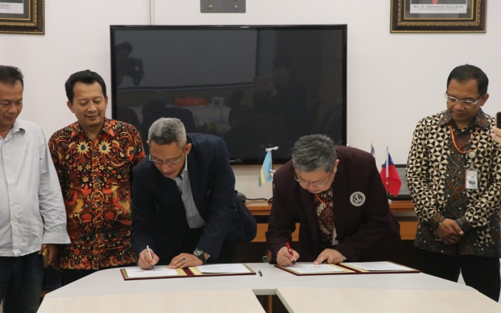

TENTANG KAMI

Tecnopreneur merupakan sebutan untuk seseorang yang memanfaatkan perkembangan teknologi mutakhir untuk dioptimalkan sebagai basis dalam mengembangkan pengembangan usaha. Sederhananya, technopreneur adalah seseorang yang mengelola usaha menggunakan basis teknologi. Kemunculan technopreneur tak lepas dari pergeseran lanskap perekonomian dari resource based menjadi knowledge based.
Nah agar entrepreneur tetap bisa bersaing di dunia usaha maka harus meng-upgrade usahanya. Tak heran inovasi menjadi hal penting yang harus selalu diperhatikan. Salah satu jenis technopreneur adalah high-tech business, yaitu usaha-usaha yang menggunakan inovasi teknologi. Inovasi yang berbasis teknologi ini diharapkan dapat memberi nilai tambah pada keseluruhan proses produksi. Dengan demikian kenyamanan, kemudahan, efisiensi, produktivitas, juga kecepatan bisa diwujudkan.
Peran dan Tanggung Jawab
• Melaksanakan riset dan pengembangan ilmu pengetahuan dan teknologi
• Mengutamakan kemudahan dalam penggunaan teknologi
• Mengolah teknologi dengan mengedepankan efisiensi dan efektivitas sehingga dapat menghasilkan produk yang berkualitas
• Melakukan inovasi teknologi untuk mengubahnya menjadi lebih canggih, modern dan sesuai dengan tuntutan pasar
Awal sejarah PENS dimulai pada tahun 1985. Saat itu, tim studi awal Japan International Cooperation Agency (JICA) untuk bantuan dan kerjasama teknik yang dikepalai oleh Prof. Y. Naito dari Tokyo Institute of Technology, datang ke politeknik ini. Setelah melakukan pengamatan dan studi kelayakan di tahun 1986, JICA menyetujui untuk memulai kerjasama teknik di tahun 1987 dengan mengirim 5 orang pengajar Indonesia ke perguruan tinggi teknologi di Jepang.
Politeknik Elektronika & Telekomunikasi (PET) 1988 – 1992
Pada tanggal 15 Maret 1988, Pemerintah Jepang, melalui JICA secara resmi memberikan gedung kampus kepada pemerintah Indonesia lengkap dengan berbagai peralatan pendidikan. Selanjutnya pada tanggal 2 Juni 1988 Politeknik ini diresmikan dengan nama “Politeknik Elektronika & Telekomunikasi (PET)” dan sejak saat itulah tahun ajaran dimulai. Kerjasama dengan JICA pun berlanjut dengan banyaknya pengajar politeknik yang dikirim ke berbagai perguruan tinggi teknologi di Jepang dan sebaliknya, pengiriman beberapa ahli dari Jepang ke politeknik ini.
Politeknik Elektronik Surabaya (PES) 1992 – 1996
Pada bulan Juni 1991, Menteri Pendidikan dan Kebudayaan menata ulang keberadaan seluruh Politeknik, Institut dan sebagian Universitas di Indonesia. Pada saat itu politeknik ini pun berubah nama menjadi “Politeknik Elektronika Surabaya (PES)” yang merupakan bagian dari Institut Teknologi Sepuluh Nopember Surabaya (ITS).
Politeknik Elektronika Negeri Surabaya (PENS) 1996 hingga sekarang
Pada tahun 1996, nama politeknik ini kembali diubah oleh Menteri Pendidikan dan Kebudayaan menjadi “Politeknik Elektronika Negeri Surabaya (PENS)”. Nama itulah yang kemudian tetap bertahan hingga kini.
VISI
Menjadi pusat unggulan pendidikan teknologi rekayasa di bidang emerging technology dalam skala nasional maupun internasional.
MISI
• Menyelenggarakan pendidikan dengan menyediakan lingkungan dan suasana akademik yang berkualitas untuk menghasilkan lulusan yang profesional, berpikiran terbuka, kreatif dan berjiwa pemimpin, yang siap bersaing di era global.
• Sebagai sumber daya politeknik nasional, berperan aktif dalam pengembangan dan peningkatan sistem pendidikan politeknik di Indonesia.
• Melaksanakan penelitian yang berorientasi penemuan, pengembangan, kombinasi, atau integrasi dari beberapa teknologi yang sudah ada sebelumnya, menjadi teknologi baru yang membawa kemaslahatan masyarakat.
• Membangun dan mengimplementasikan nilai-nilai etika moral akademis dan sosial masyarakat.
DAFTAR

Surabaya, pens.ac.id – Dalam mengembangkan inkubator bisnis, Politeknik Elektronika Negeri Surabaya (PENS) melakukan penandatanganan nota kesepahaman (MoU) dengan Universitas Ciputra (13/6). Bertempat di ruang rapat Direktur lantai 2 Gedung Pascasarjana, penandatanganan dilakukan oleh Rektor Universitas Ciputra, Ir. Yohannes Somawiharja, M.Sc dengan Dr. Zainal Arief selaku Direktur PENS. Para Dekan beserta tim Yayasan Pengelola Aset Pendidikan Universitas Ciputra juga turut hadir menyaksikan penandatangan MoU.
Dalam MoU, PENS dan Universitas Ciputra saling bersinergi dalam pengembangan technopreneur inkubator bisnis, dengan tujuan menciptakan pengusaha muda di Indonesia dalam bidang industri. Sehingga keduanya bisa bertukar SDM serta melakukan pengembangan teknologi.
“ PENS dalam hal ini, mempunyai peran dalam pengembangan teknologi. Sedangkan Universitas Ciputra berperan dalam sisi entrepreneur-nya, seperti marketing, pengemasan produk, dan cara penyajian supaya lebih menarik. Semuanya saling bersinergi untuk membangun dan menciptakan produk dalam bidang inovasi.”, ujar Wakil Direktur Bidang Kerjasama, Edi Satriyanto M.Si.
Setelah penandatangan, tim dari Universitas Ciputra berkunjung ke PUT (Pusat Unggulan Teknologi) dan Inkubator Bisnis PENS. Untuk melihat langsung produk-produk inovasi dan proses pembuatannya dan berinteraksi lagsung dengan para tenant.
“ Harapannya, antara PENS dan Universitas Ciputra bisa saling menguatkan, bisa menciptakan produk dan inovasi baru, menghasilkan tenant yang lebih banyak, meningkatkan keberhasilkan keberhasilan pengusaha, dan bisa mencari investor dari luar negeri. Selain itu, bisa membuat pengusaha-pengusaha muda jauh lebih kreatif, inovatif, proposional, mampu bersaing, dan produk-produknya bisa dijual secara global.”, imbuh Bapak Edi.
Alur Pendaftaran
Technopreneur berarti membuat usaha dan bisnis yang berbasis pada teknologi dan industri. Tentunya kehadiran technopreneur dan entrepreneur di Indonesia amat dibutuhkan.
Pasalnya, dengan membuka usaha industri baru dari negara kita sendiri, hal ini dapat menambah aset dan nilai tinggi yang bermanfaat di bidang industri Indonesia. Kesejahteraan dari bangsa kita kepada orang Indonesia sendiri jauh lebih baik.
Munculnya start up yang dibuat oleh para technopreneur befungsi untuk menambah lapangan kerja baru. Selain itu, adanya technopreneur juga dapat meningkatkan sektor industri di negara Indonesia. Sehingga kita juga bisa buktikan, bahwa bangsa Indonesia bisa tak selalu bergantung dengan produk asing.
Jika kita menengok ke negara maju, menjamurnya para technopreneur merupakan salah satu faktor penting dalam kemajuan ekonomi bangsa mereka. Lalu bagaimana antusias technopreneur di Indonesia sendiri ?
“Berdasarkan riset yang dilakukan di sejumlah perguruan tinggi di Bandung, 75 persen mahasiswa ingin punya bisnis dalam hidupnya,” ujar Dwi Larso, Wakil Ketua Ikatan Alumni ITB, dalam Acara Media Gathering Indonesianisme Summit 2017 di Jakarta pada Rabu (29/11/2017)
Menurutnya, jumlah itu menunjukan modal yang sangat besar mengenai bibit-bibit technopreneur di masyarakat kita. Menurut Dwi, data tersebut bisa diterapkan melalui kurikulum lembaga perguruan tinggi supaya sukses terlaksana.
Tentunya, sudah menjadi harapan untuk para lulusan perguruan tinggi saat ini agar bisa menjadi technopreneur atau entrepreneur. Namun untuk menjadi technopreneur perlu ada beberapa hal yang perlu dipertimbangkan.
“Ada tiga hal yang dibutuhkan untuk jiwa-jiwa entrepreneur, mulai dari knowledge (pengetahuan), skill (kemampuan), dan attitude (sikap),” ucap Dwi Larso.
Menurutnya, pengetahuan akan mudah didapatkan oleh generasi muda saat ini yang cepat beradaptasi dengan teknologi. Sedangkan, hal yang tak mudah didapatkan ialah sikap atau attitude.
Sikap yang diperlukan untuk menjadi jiwa technopreneur, tak bisa diajarkan di bangku kuliah atau semacamnya, melainkan dididik dari sejak lama.
Dwi Larso menjelaskan, sikap pantang menyerah yang harus dimiliki dimulai dari sejak kecil atau didapat dari pendidikan karakter. Selain itu, sikap optimis, tekun, dan disiplin merupakan bagian yang dari attitude yang diperlukan untuk menjadi jiwa technopreneur.
Ia juga menambahkan, dorongan untuk membuat usaha dan bisnis disebabkan karena anak muda saat ini merasa mandiri dan tak mau diatur.
Oleh karena itu, pentingnya kemauan untuk menjadi seorang technoprenur patut untuk diapresiasi, sekaligus dibutuhkan untuk negara. Bagi generasi muda, tak perlu takut untuk membuka dan mengembangan bisnis industri ataupun start up.
Berikut alur pendaftaran agar menjadi pens technopreneur
• Pertama, melakukan penelitian pasar untuk mengetahui persoalan yang ingin dipecahkan dan dibutuhkan masyarakat. Setelah itu, hasil penelitian diwujudkan dalam sebuah produk sebagai solusi pemecahan masalah tersebut.Melihat kebutuhan pasar itu memang perlu karena orang hanya akan membeli produk yang dapat memecahkan persoalan mereka. Ketika teknologi itu tidak memberikan solusi bagi masyarakat, tidak akan ada yang membeli.
• Kedua, produk yang dibuat harus memiliki ke unggulan dan keunikan sehingga berbeda dari produk-produk lainnya yang telah beredar di pasaran.
• Ketiga, menentukan pangsa pasar sehingga produk yang dibuat dapat disesuaikan dengan spesifikasi target market. Hal tersebut juga dapat mempermudah dalam menentukan harga.
• Keempat, setelah produk tersebut dihasilkan, harus melakukan tes pasar untuk mengetahui tanggapan pasar sebelum produknya dibuat secara massal.
• Kelima, terus melakukan inovasi-inovasi yang membuat produk tersebut menjadi semakin unggul dan memberikan nilai tambah bagi masyarakat. Sebab seorang technopreneur harus mampu mengombinasikan antara kecanggihan teknologi dan jiwa entrepreneur.
• Terakhir, yang tidak kalah pentingnya adalah mendaftarkan produk tersebut di Ditjen Hak Kekayaan Intelektual untuk mendapatkan hak paten. Karena produk berbasis teknologi dan ide kreatif, hak paten itu penting sebagai perlindungan agar tidak ada yang meniru